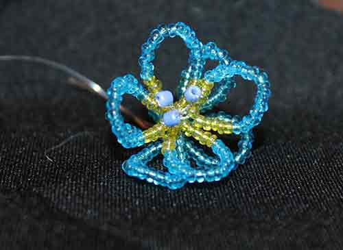

Бусы из различных материалов — глины, кости, пасты (это предшественник стекла), драгоценных и полудрагоценных камней были известны на территории России с древних времен. Археологи находят их в большом количестве во время раскопок. Имеются находки, датированные даже 20-25 веками назад. В те времена основным назначением украшения одежды и ношения бус, была защита от злых духов. Но не только — красиво выглядеть люди хотели и тогда. В России бисероплетение и вышивка бусинками получило широкое распространение во времена Киевской Руси. До этого долгое время бисер был привозным, а значит, невероятно дорогим. В IX веке на Руси возникли первые мастерские по изготовлению предметов из стекла, в XI– XIII веках потихоньку начало развиваться массовое его производство. По свидетельству археологов, на территории Киевского государства нередки находки остатков стеклоплавильных печей, осколки стекла, посуды, бус, перстней. Древнерусские мастера тоже внесли свою лепту в развитие стеклоделательного производства. В XII веке они научились делать стекло разных цветов — синее, зеленое, желтое, черное, посеребренное и золоченое.
Цветы — это прекрасные создания природы, наблюдая за которыми мы все получаем искреннее наслаждение и умиротворение. Но не всегда есть возможность отправиться на природу, а за цветами в горшочках нужен постоянный уход. Поэтому давайте научимся делать цветы из бисера, которые будут всегда нас радовать своей красотой! Начнем, конечно, с самой простой техники плетения цветка.
